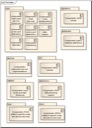
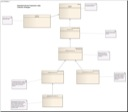
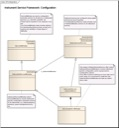
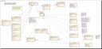

Once you've gotten SIAM up and running, you may have devices that does not already have a SIAM service.
This section provides information to enable developers to write SIAM instrument services for new instruments and other devices. It's also a good starting point for understanding SIAM internals and architecture. Topic in this section include
Integrating new sensors can be one of the most common and yet time-consuming and technically risky activities associated with maintaining an observing system. Developers of varying degrees of experience and familiarity with the language and internals of the observing system write and test new code, potentially introducing errors that degrade performance.
If the observing system doesn't expose facilities for fundamental and common activities like data logging, timestamping, and resource management, these may be reinvented many times over, which is at best very inefficient. SIAM aims to reduce this time and risk with its instrument service framework.
The framework encapsulates common operations and data collection strategies used by many COTS and custom instruments, allowing developers to focus on writing what they understand best: device-specific APIs.
| Component | Description | Diagram |
|---|---|---|
| Packages | The package diagram describes the contents of top-level SIAM software packages. |

SIAM Packages
|
| Components | The component diagram above provdes a view of the relationship between key SIAM software components and interfaces. | |
| ISF Strategies | Instrument Service Framework class diagrams: Data acquisition strategies (polled, streaming...) |

Instrument Service Framework: strategies
|
| ISF Configuration | Instrument Service Framework class diagrams: Service configuration (Attributes) |

Instrument Service Framework: configuration
|
| ISF Input/Output | Instrument Service Framework class diagrams: Input/Output |

Instrument Service Framework: input/output
|
| ISF Scheduling | Instrument Service Framework class diagrams: Scheduling mechanisms | |
| ISF Logging | Instrument Service Framework class diagrams: Logging mechanisms | |
| ISF States | Instrument Service Framework state diagram: Instrument service states |
The Instrument Service Framework simplifies the process of writing new instrument services by providing most of the basic facilities needed to acquire and log data. Use this example to write a complete functional instrument service that collects data through a serial port from a dummy instrument, the Fake-O-Tron.
Read the HelloSIAM example
Like most frameworks, SIAM is intended to be flexible and extensible; there are many ways to do things with the SIAM framework. This section presents general information and practices that may be helpful when using SIAM.
One structural pattern that has worked well for some SIAM instrument services is to encapsulate device-specific protocols and constants (what you may think of as driver software) into a class (or set of classes) that are indendent of SIAM. This makes it possible to write non-SIAM applications to use the device interface completely outside the SIAM software stack. This has the advantages of making testing easier, isolating the device logic from the service logic, and making the device software more reusable.
An instrument service or test utility creates and uses an instance of the hardware abstraction class, supply the hardware abstraction object with a serial port. One or more interfaces exposing/hiding parts of the device API are created. The service may implement the defined interface(s) by simply wrapping the the hardware instance with the required method calls. Utilities then may use this interface to invoke remote methods on the hardware via the service.
The following diagram illustrates this pattern:
Examples of this pattern can be found in the following services:
Most SIAM services that extend the InstrumentServiceAttributes to include service-specific configuration parameters, do so by defining the attributes as an inner class. It is sometimes useful to define them as a stand-alone class. The only potential disadvantage to doing so is that it increases the number of classes and source files, but it enables the attributes to be more easily shared among other objects. This is especially useful in the context of virtual services that manage objects that all depend on (and need to share) a single instance of the service attributes.
InstrumentServiceAttributes attributes are primarily intended to be used to provide a mechanism for configuring service defaults (in the instrument service JAR) and for dynamically changing run-time service configuration. This infrastructure feature is very useful, providing type validation and metadata updates automatically, and the ability to assign callbacks when values change. They can also enforce policies for required and optional parameters.
There is a dependency between the InstrumentServiceAttributes and configuration syntax, since the configuration information is provided by uses as text (for example in in a JAR makefile/script, or from the setProperty command line). The current infrastructure supports fully supports alll attributes that are primitive data types, and there is also support for some mnemonic types (where the user supplies a mnemonic that represents a numeric value). Other complex data types (classes) are not generally supported, though SIAM could be extended to do so.
SIAM natively supports PUCK protocol
While instrument services do not generally need to use this facility directly, they have access to PUCK contents, namely service.properties (which are used to set instrument service attribute default values when the service is loaded) and service.xml. There are not any facilities in SIAM for XML data bindings that allow instrument services to programatically use the contents of service.xml.
It is useful to include a packet parser in new instrument services. Packet parsers are a component that parse data into named fields with units, so that the data may be displayed in human-readable format or used programatically. Several utilities (SamplePort, getLastSample, logView) can optionally (and automatically) display parsed data if a parser exists. In addition, data streaming via DataTurbine is supported by packet parsers.
The relevant classes are these:
Instrument services that generate multiple types of data packets may need more than one parser; in this case, one structural approach is to write a parser for each packet type, and that an additional parser be written that determines the packet type and delegates to an appropriate parser instance.
An instrument service can declare an instance and override getParser() to return a PacketParser:
/** PacketParser instance */
PacketParser _stateParser=null;
/** Return a PacketParser (create one if an instance doesn't exist). */
public PacketParser getParser() throws NotSupportedException{
// lazy-create the parser
if(_packetParser==null){
_packetParser=new CO2SubsystemMonitorParser(_attributes.registryName,",");
}
// return the instance
return _packetParser;
}
The service produces comma-delimited ASCII data, so the parser extends DelimitedStringParser.
There are only a few methods to implement: a constructor, an initializer (not required, just how this parser does things), and a method to fill create a PacketParser.Field for each data element, depending on its data type:
public class CO2SubsystemMonitorParser extends DelimitedStringParser{
static private Logger _log4j = Logger.getLogger(CO2SubsystemMonitorParser.class);
public static final int INDEX_BASE =0;
public static final int VOLTAGE_24V_INDEX =INDEX_BASE+0;
public static final int CURRENT_24V_INDEX =INDEX_BASE+1;
public static final int HUMIDITY_INDEX =INDEX_BASE+2;
public static final int TEMPERATURE_INDEX =INDEX_BASE+3;
public static final int FAN_STATE_INDEX =INDEX_BASE+4;
public static final int WATER_SENSOR_1_INDEX =INDEX_BASE+5;
public static final int WATER_SENSOR_2_INDEX =INDEX_BASE+6;
public static final int FAN_CONTROL_INDEX =INDEX_BASE+7;
public Vector fieldNames=new Vector();
public Vector fieldUnits=new Vector();
private static final long serialVersionUID=1L;
/** No-arg constructor needed to instantiate via class loader (e.g. by logView) */
public CO2SubsystemMonitorParser(){
super();
this.initialize();
}
public CO2SubsystemMonitorParser(String registryName, String delimiters){
super(registryName,delimiters);
this.initialize();
}
protected void initialize(){
fieldNames.add(VOLTAGE_24V_INDEX, "voltage_24v");
fieldNames.add(CURRENT_24V_INDEX, "current_24v");
fieldNames.add(HUMIDITY_INDEX, "humidity");
fieldNames.add(TEMPERATURE_INDEX, "temperature");
fieldNames.add(FAN_STATE_INDEX, "fan_state");
fieldNames.add(WATER_SENSOR_1_INDEX,"water_1");
fieldNames.add(WATER_SENSOR_2_INDEX,"water_2");
fieldNames.add(FAN_CONTROL_INDEX, "fan_control");
fieldUnits.add(VOLTAGE_24V_INDEX, "volts");
fieldUnits.add(CURRENT_24V_INDEX, "amperes");
fieldUnits.add(HUMIDITY_INDEX, "percent");
fieldUnits.add(TEMPERATURE_INDEX, "deg C");
fieldUnits.add(FAN_STATE_INDEX, "~0:on ~4096:off");
fieldUnits.add(WATER_SENSOR_1_INDEX,"1:off 0:on");
fieldUnits.add(WATER_SENSOR_2_INDEX,"1:off 0:on");
fieldUnits.add(FAN_CONTROL_INDEX, "0:on 1:off");
}
/** Process the token, whose position in string is nToken. If
token corresponds to a Field, create and return the field.
Otherwise return null. */
protected PacketParser.Field processToken(int nToken,String token)
throws ParseException{
if(_log4j.isDebugEnabled()){
//_log4j.debug("parsing token ["+token+"/"+nToken+"]");
}
switch (nToken) {
case VOLTAGE_24V_INDEX:
case CURRENT_24V_INDEX:
case HUMIDITY_INDEX:
case TEMPERATURE_INDEX:
return new PacketParser.Field((String)fieldNames.get(nToken),new Double(token),(String)fieldUnits.get(nToken));
case FAN_STATE_INDEX:
case FAN_CONTROL_INDEX:
case WATER_SENSOR_1_INDEX:
case WATER_SENSOR_2_INDEX:
return new PacketParser.Field((String)fieldNames.get(nToken),new Integer(token),(String)fieldUnits.get(nToken));
default:
throw new ParseException("invalid field index ["+nToken+"] parsing CO2SubsystemMonitor packet",nToken);
}
}
}
The Instrument Service Framework supports data streaming (pub/sub) using Open Source DataTurbine. BaseInstrumentService includes an instance of Turbinator (org.mbari.siam.dataTurbine.Turbinator). When DataTurbine support is enabled in a service, the Turbinator parses SensorDataPackets and publishes them to a DataTurbine server.
To use DataTurbine support, the instrument service has to provide a PacketParser (org.mbari.siam.distributed.PacketParser), and override the method getPacketParser() defined in BaseInstrumentService. The PacketParser must be capable of parsing any packet types that are to be published to DataTurbine. DataTurbine servers are configured individually for each instrument service; the instrument service must define the property rbnbServer.
The SIAM registry is a publish-subscribe mechanism that allows data to be distributed to software components within the SIAM JVM (i.e. remote pub/sub is not currently supported).
To publish to the registry, a component must have a unique registry name. DeviceService declares a service attribute called registryName for this purpose. By default, it us null, and to use the registry, instrument services must configure a service attribute called registryName with a unique name; usually this is done where the instrument service JAR is configured. When this is done, SensorDataPackets are automatically sent to subscribers via a callback method (see below).
To subscribe to data from a registered service, components must implement the InstrumentDataListener interface (org.mbari.siam.registry.InstrumentDataListener). The interface defines two methods:
/** Callback for new data record
@param sensorData - SensorDataPacket that instrument logged
@param fields - Result of passing sensorData to PacketParser.parseFields()
if registered DeviceService is an instanceof BaseInstrumentService. Else null.
*/
public void dataCallback(DevicePacket sensorData, PacketParser.Field[] fields);
/**Action performed when service installed */
public void serviceRegisteredCallback(RegistryEntry entry);
EventManager is a mechanism for notifying objects of system level events. The EventManager is implemented as a singleton; it is typically started by the NodeManager. It has a Queue member field, which implements the event queue thread. Once created, the EventManager waits for events to be posted. An EventDispatcher thread is created and allocated, one per listener. When an event comes in, it is posted to each EventDispatcher that handles an event of that type. Objects may register as listeners of various event types, or post events to the EventManager queue. All event types must be extended from NodeEvent, which extends java.util.EventObject.
There are a number of events that may be published/subscribed to in the system:
Objects receive event notifications by implementing the appropriate listener interface methods, and registering with the EventManager via the addListener method. To publish an event, the EventManager postEvent method is called.
There are no guarantees about the timeliness or ordering of messages, except that they are dispatched in the order received.
SIAM provides a number of utilities that communicate with the node and its instrument services.
Node utilities (clients that use the Node interface) may make use of the NodeUtility class (org.mbari.siam.operations.utils), which provides a framework for creating new node clients.
Port utilities (clients that interface with a particular port (service) ) may make use of the PortUtility class (org.mbari.siam.operations.utils), which extends NodeUtility, adding methods for acting on one or more instrument ports (services).
Similarly, the DeviceLogUtility class (clients that interface to SIAM service data logs) may be based on the DeviceLogUtil class (org.mbari.siam.operations.utils).
The typical pattern for constructing these types of utilities is to
It is often convenient to write custom services to manage instrument-specific functions of an instrument service, for example perform diagnostic functions. There are a couple of approaches to this. One way is to use ServiceAttributes to trigger operations. This technique is rather limited, since this mechanism doesn't make it easy to pass multiple arguments (particularly complex data types) and get return values.
A perhaps better approach is to write a utility that uses JAVA Remote Method Invocation (RMI) to execute remote methods on service stub obtained from the node service.
The pattern for constructing such utilties looks like this:
The FOCE CO2 subsystem monitor is an instrument service that monitors environmental conditions inside of an electronics housing; it also controls a CPU cooling fan. A utility was written to operate the cooling fan, turning it on or off. The following interface, CO2SubsystemMonitorIF, is declared in siam.distributed.devices:
public interface CO2SubsystemMonitorIF
extends Remote{
/** Fan state constant ON */
public static final int FAN_CONTROL_ON=0;
/** Fan state constant OFF */
public static final int FAN_CONTROL_OFF=1;
/** Set the CO2 cooling fan control bit. valid state values
are FAN_CONTROL_ON, FAN_CONTROL_OFF
*/
public void setFanControl(int state) throws Exception,RemoteException;
/** get the CO2 Subsystem monitor state */
public PacketParser.Field[] getMonitorState() throws Exception,RemoteException;
}
The CO2 subsystem monitor service (org.mbari.siam.foce.devices.subsys.CO2SubsystemMonitor) also implements this interface, as well as the methods declared by the interface:
public class CO2SubsystemMonitor extends PolledInstrumentService
implements Instrument, InstrumentDataListener, CO2SubsystemMonitorIF{
...
/////////////////////////////////////////////////////////
// CO2SubsystemMonitorIF methods //
/////////////////////////////////////////////////////////
/** Set the CO2 cooling fan control bit. valid state values
are FAN_CONTROL_ON, FAN_CONTROL_OFF
*/
public void setFanControl(int state)
throws Exception{
boolean bstate=true;
switch (state) {
case FAN_CONTROL_ON:
bstate=false;
break;
case FAN_CONTROL_OFF:
bstate=true;
break;
default:
throw new Exception("Invalid state ["+state+"] in setFanControl. Use FAN_CONTROL_OFF and FAN_CONTROL_ON");
}
// the logic sense is inverted, so
_io_module.writeDigitalOut(bstate);
}
/** Read the monitor state, but do not log the sample */
public PacketParser.Field[] getMonitorState()
throws Exception{
if(_stateBytes==null){
_stateBytes=new byte[getMaxSampleBytes()];
}
int bytesRead=readSample(_stateBytes);
if(_statePacket==null){
_statePacket=new SensorDataPacket(getId(),getMaxSampleBytes());
}
_statePacket = processSample(_stateBytes,bytesRead);
if(_stateParser==null){
_stateParser=getParser();
}
return _stateParser.parseFields(_statePacket);
}
...
The utility subclasses PortUtility, and overrides the methods necessary to process command line arguments and to perform the utility business logic.
Method processCustomOption() processes command line arguments specific to the utility (PortUtility parses the node URL and port arguments):
/** Process application-specific option. */
public void processCustomOption(String[] args, int index)
throws InvalidOption{
for(int i=0;i<args.length;i++){
if(args[i].equals("-f")){
// process fan command option
String test=args[i+1];
if(test.equalsIgnoreCase("ON")){
// set command to ON
_fan_cmd=CO2SubsystemMonitorIF.FAN_CONTROL_ON;
// enable fan setting
_setFan=true;
i++;
}else if(test.equalsIgnoreCase("OFF")){
// set command to OFF
_fan_cmd=CO2SubsystemMonitorIF.FAN_CONTROL_OFF;
// enable fan setting
_setFan=true;
i++;
}
}else if(args[i].equals("-q")){
// quiet option: disable state reporting
_getState=false;
}
}
}
Method processPort() performs the utility action for the port(s) specified on the command line:
/** Perform the utility logic */
public void processPort(Node node, String portName)
throws RemoteException{
try {
// the node provides a reference to a Device
device = node.getDevice(portName.getBytes());
} catch (Exception e) {
System.err.println("Exception looking up port " + portName + " : " + e);
return;
}
// Ensure that the Device implements CO2SubsystemMonitorIF
if (!(device instanceof CO2SubsystemMonitorIF)){
System.err.println("Service on port ["+portName + "] is not a CO2SubsystemMonitor. Exiting.");
return;
}
// Cast service as CO2SubsystemMonitorIF
_CO2Subsys = (CO2SubsystemMonitorIF)device;
// do operations with via CO2SubsystemMonitorIF interface
if(_setFan){
try{
// call remote method to turn fan on/off
_CO2Subsys.setFanControl(_fan_cmd);
}catch (Exception e) {
_log4j.error("setFanControl failed:");
e.printStackTrace();
}
}
if(_getState){
try{
// call remote method to report state
// (displays a parsed SensorDataPacket)
PacketParser.Field[] fields= _CO2Subsys.getMonitorState();
for(int i=0;i<fields.length;i++){
System.out.println(" "+fields[i].getName()+" "+fields[i].getValue()+" "+fields[i].getUnits());
}
}catch (Exception e) {
_log4j.error("getMonitorState failed:");
e.printStackTrace();
}
}
}
The main method is required to run the utility from the command line:
/** Main method (so utility may be invoked from command line) */
public static void main(String[] args) {
// Configure log4j
PropertyConfigurator.configure(System.getProperties());
BasicConfigurator.configure();
// get utility instance
CO2SubsysUtil util = new CO2SubsysUtil();
// process command line arguments
util.processArguments(args,2);
// do utility action
util.run();
}
Recently, a new class of service is being developed under SIAM: "virtual" instrument services that aggregate data from other services to perform new services. For example, a closed loop control service is being implemented for FOCE. This service collects data from many different instruments and controls pumps, valves and motors to maintain a constant pH within an experimental apparatus in the deep ocean.
A detailed presentation of this architecture is outside the scope of this document, and in fact, the implementation is still being tested and developed at this time. But it does use many of the structural patterns described here, as well as using the data pub/sub mechanisms SIAM provides to gather data from various sensors.
The following packages and classes relate to the FOCE control system:
| Component | Description |
|---|---|
| org.mbari.siam.foce.controlLoop | Package contains implementations for control service classes |
|
org.mbari.siam.foce.utils.ControlClient SIAM_HOME/utils/foce/cloop |
Control service client utility |
|
org.mbari.siam.foce.utils.CLOTH org.mbari.siam.tests.utils.osdt.* SIAM_HOME/utils/foce/cloth SIAM_HOME/src/org/mbari/siam/tests/utils/osdt/runModel SIAM_HOME/src/org/mbari/siam/tests/utils/osdt/osdtTestClient SIAM_HOME/src/org/mbari/siam/tests/utils/osdt/osdtTestClient |
Control service test harness |
It is often required to integrate data from devices that are not traditional serial instruments. For example, platforms may have COTS or custom digital hardware with memory mapped I/O, or accessed via a hardware bus.
While SIAM doesn't include generic mechanisms for such devices, there are examples of interfaces that have been developed for various platform-specific applications at MBARI.
| Example | Description | Platform | Related Material |
|---|---|---|---|
| Dual Port Adapter (DPA) | Custom digital I/O card, interfaced via SPI bus and memory mapped I/O. A Linux kernel-space driver was written to expose the SPI bus and memory mapped I/O through the linux dev file system. | MOOS mooring controller (MMC) |
|
| Ricoh RTC | Real-time clock interface for a Ricoh RTC clock chip | MOOS mooring controller (MMC) |
|
| FOCE digital I/O | Interface to PC104 A/D and Digital I/O cards. Here, a linux application was written with drivers for several different digital I/O cards. SIAM instrument services were written to access the linux app through a TCP/IP socket interface. | FOCE Controller |
|